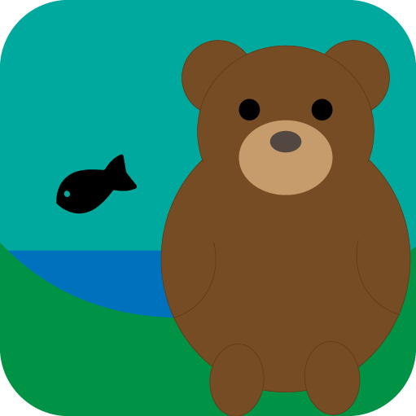
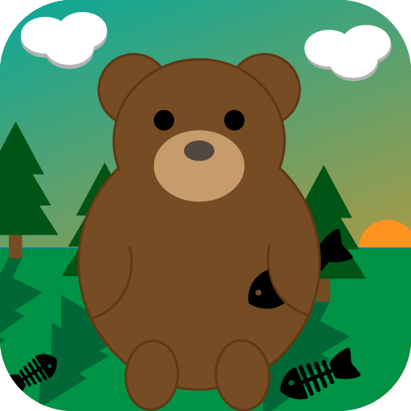
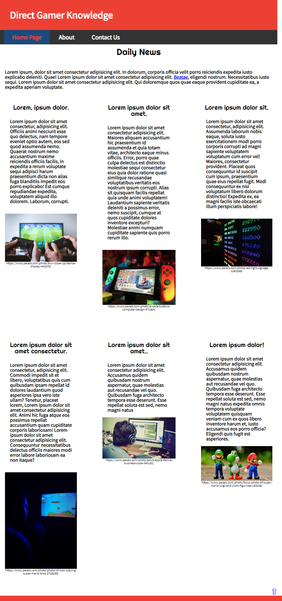
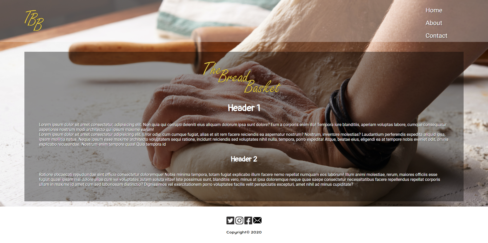
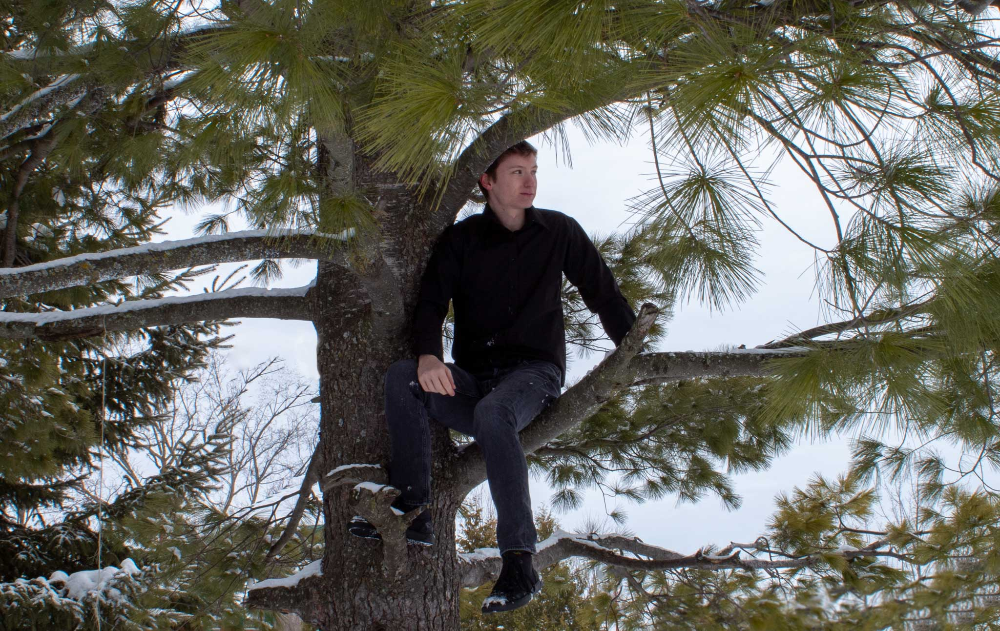

Portfolio
Graphic Design
During my time at Algonquin College I've created these icons for an assignment, where I was instructed to create a story using simple graphics in the size of apple icons. The first icon was to only be in black and white. The second, simple colours with more detail. The third, more detail, colours and the use of a gradient.


Web Design
Alongside Graphic Design, at Algonquin College I learnt Web Design. Here are a few websites I created during my time at Algonquin. Currently in my second year, I've learnt HTML and CSS. During my third year I will be learning Java Script.


Photography
Here are a two photos from my years at Algonquin College
